Part A used a large pretrained flow model. This part trains small ones from scratch on MNIST. Part 1 trains a UNet to remove noise from a digit in a single step, then shows why that same setup cannot generate new digits from pure noise. Part 2 trains a flow matching UNet that removes noise gradually, first conditioned on time alone and then on time and digit class with classifier-free guidance. MNIST pixels are in [0, 1].
The denoiser is a small UNet. The encoder takes the 28 × 28 digit down to 14 × 14 and then 7 × 7, and an average pool squeezes that to a single 1 × 1 vector. The decoder mirrors those steps back up to 28 × 28. At each resolution it concatenates the matching encoder features (the skip connections), so fine detail lost in the bottleneck can be passed straight across. Every block is a convolution followed by BatchNorm and GELU, with D hidden channels at full resolution and 2D at the lower ones.
conv1 = self.ConvBlock1(x) # D x 28 x 28
down1 = self.DownBlock1(conv1) # D x 14 x 14
down2 = self.DownBlock2(down1) # 2D x 7 x 7
flat = self.Flatten(down2) # 2D x 1 x 1
unflat = self.Unflatten(flat) # 2D x 7 x 7
up1 = self.UpBlock1(torch.cat([unflat, down2], dim=1)) # D x 14 x 14
up2 = self.UpBlock2(torch.cat([up1, down1], dim=1)) # D x 28 x 28
conv2 = self.ConvBlock2(torch.cat([up2, conv1], dim=1)) # D x 28 x 28
return self.Conv(conv2) # 1 x 28 x 28Training pairs come from adding Gaussian noise to clean digits:
z = x + σ · ε ε ~ N(0, I) L = E ‖ D_θ(z) − x ‖²
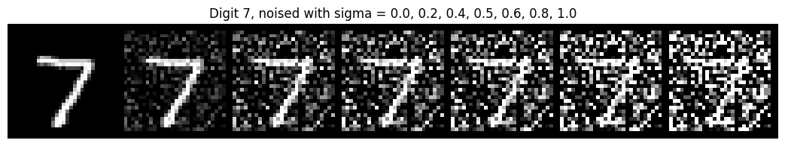
The denoiser is trained at σ = 0.5 for 5 epochs with D = 128, batch size 256 and Adam at a learning rate of 1e-4. Noise is drawn fresh each time a batch is loaded, so every epoch sees new noisy versions of the same digits.
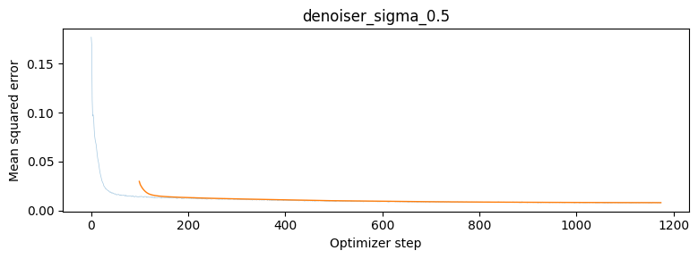
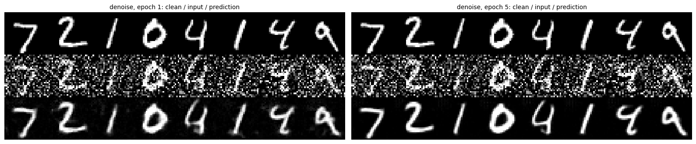
After one epoch the digits are already readable but soft, with faint smudges left in the background. After five, the strokes are sharper and the background is clean black.
The same model, still trained only at σ = 0.5, applied to the same test digits at other noise levels:
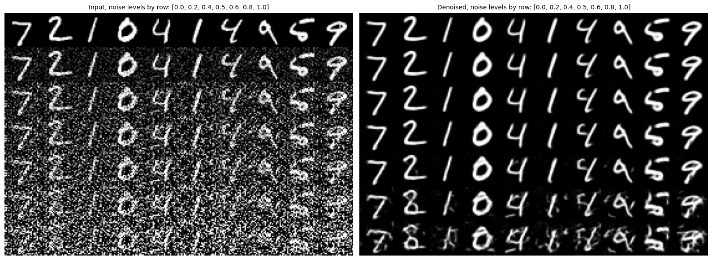
Up to σ = 0.6 the outputs stay clean. Below 0.5 the model has less noise to remove than it was trained for, and it handles that without trouble. Above 0.6 it sees more noise than it was trained on: at 0.8 and 1.0 the strokes break up, leftover noise turns into extra strokes, and some digits change shape, such as the 2 turning into something closer to an 8.
To try generation, the same training is repeated with the input replaced by pure noise, z = ε, while the target is still a clean digit.
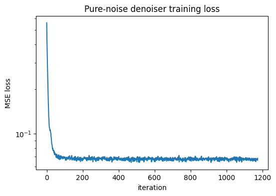
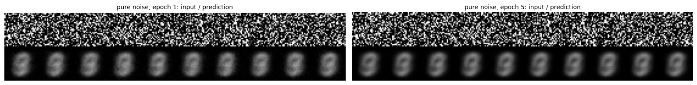
Every output is the same centered blob, no matter which noise goes in. It looks like several digits laid on top of each other, mostly 0, 3, 8 and 9. The blob is already there after epoch 1, and by epoch 5 it is a smooth average.
The reason is the loss. Under MSE, the best prediction for an input z is the average of all targets that come with that input, E[x | z]. Here the noise is drawn independently of the digit, so it says nothing about which digit to produce, and E[x | z] is just E[x]: the mean of the training set. The loss levels off near 0.065 for the same reason. That is the spread of the digits around their mean, and without any information in the input no prediction can do better. A single step can only ever return that average, which is why generation needs the iterative approach in Part 2.
Flow matching builds every intermediate image as a straight-line mix between a noise sample x0 and a clean digit x1, with t = 0 as noise and t = 1 as the digit. The UNet learns the velocity along that line:
x_t = (1 − t) · x₀ + t · x₁ x₀ ~ N(0, I), t ~ U[0, 1] u(x_t, t) = d x_t / dt = x₁ − x₀ L = E ‖ (x₁ − x₀) − u_θ(x_t, t) ‖²The target includes both the digit and the noise to remove. Unlike Part 1, the model never jumps straight to a clean image; it only predicts which direction to move.
The UNet now also needs to know t. Each scalar t passes through two FCBlocks (Linear, GELU,
Linear). One outputs 2D values and scales the bottleneck features after Unflatten;
the other outputs D values and scales the output of the first UpBlock. Each value
multiplies one channel.
t = t.view(-1, 1)
t1 = self.fc1_t(t).view(-1, 2 * self.num_hiddens, 1, 1)
t2 = self.fc2_t(t).view(-1, self.num_hiddens, 1, 1)
...
unflat = self.Unflatten(flat) * t1
up1 = self.UpBlock1(torch.cat([unflat, down2], dim=1)) * t2Each training step picks a batch of digits, a random t for each one and fresh noise, builds xt, and regresses the predicted velocity onto x1 − x0. Training runs for 10 epochs with D = 64, batch size 64 and Adam starting at a learning rate of 1e-2, which decays exponentially by a factor of 0.11/10 after every epoch.
x_0 = torch.randn_like(x_1)
t = torch.rand(N, device=x_1.device)
t_ = t.view(-1, 1, 1, 1)
x_t = (1 - t_) * x_0 + t_ * x_1
loss = nn.functional.mse_loss(unet(x_t, t), x_1 - x_0)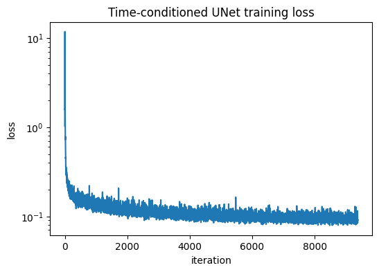
Sampling starts from pure noise and follows the predicted velocity with Euler steps of size 1/T, here with T = 50:
x ← x + (1 / T) · u_θ(x, t) t = 0, 1/T, 2/T, …
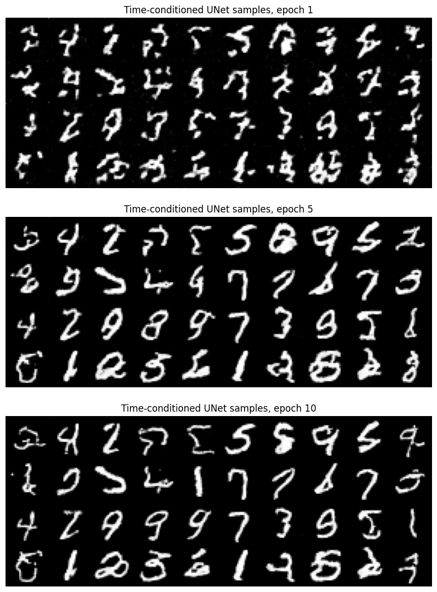
After one epoch the background is already clean, but the samples are scattered stroke fragments. By epoch 5 most fragments have joined into digit shapes, and by epoch 10 the strokes are smooth and most samples are recognizable digits. With no class information, the model chooses which digit to draw on its own, so all ten digits appear in no particular order.
To choose which digit to generate, the digit class goes in as a one-hot vector c through two more FCBlocks. Class now scales each channel and time shifts it. During training c is replaced by the zero vector 10% of the time, so the same model also learns an unconditional prediction, which classifier-free guidance needs.
c = nn.functional.one_hot(c, self.num_classes).float()
if mask is not None:
c = c * mask.view(-1, 1).float() # mask = 0 drops the class (10% of training)
...
unflat = c1 * self.Unflatten(flat) + t1
up1 = c2 * self.UpBlock1(torch.cat([unflat, down2], dim=1)) + t2Training is the same as in 2.2, with the class label passed in alongside xt and t: 10 epochs, D = 64, batch size 64, Adam at 1e-2 with the same exponential decay, and puncond = 0.1.
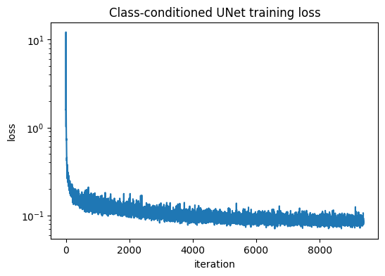
Sampling uses classifier-free guidance at every Euler step. The model runs once with the class and once with the zero vector, and the result is pushed further toward the class:
u = u_uncond + γ · (u_cond − u_uncond) γ = 5 x ← x + (1 / T) · uThe grids use 300 Euler steps, with the same starting noise at every epoch.
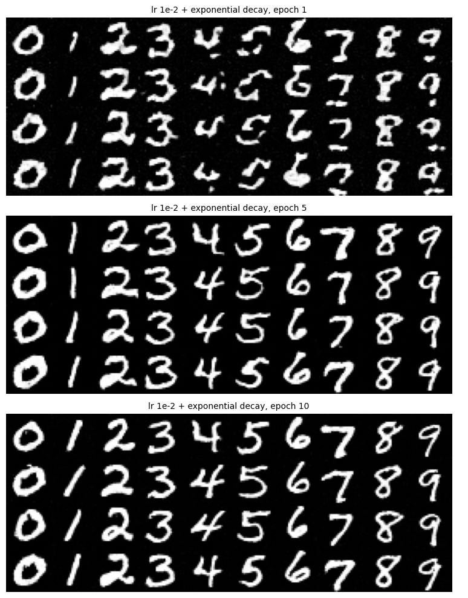
Every column is the requested digit, starting from epoch 1. Over training the strokes go from wobbly and broken to smooth and even. By epoch 10 all 40 samples are clean digits, and the four copies of each digit still differ in slant and thickness.
The exponential schedule starts at 1e-2 and decays by a factor of 10 over the 10 epochs, ending at 1e-3. Without the scheduler, the model is trained at a constant learning rate of 1e-3, the value the schedule ends at, with everything else unchanged.
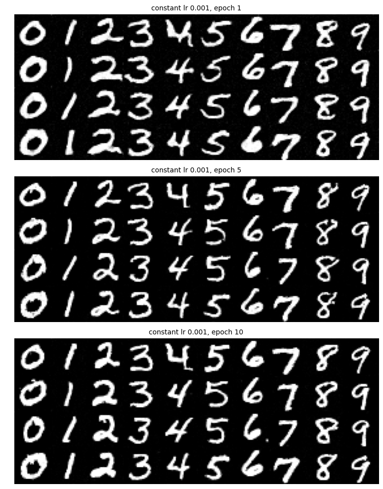
The constant-rate model already draws clean digits after epoch 1, and by epochs 5 and 10 the two runs look equally good.